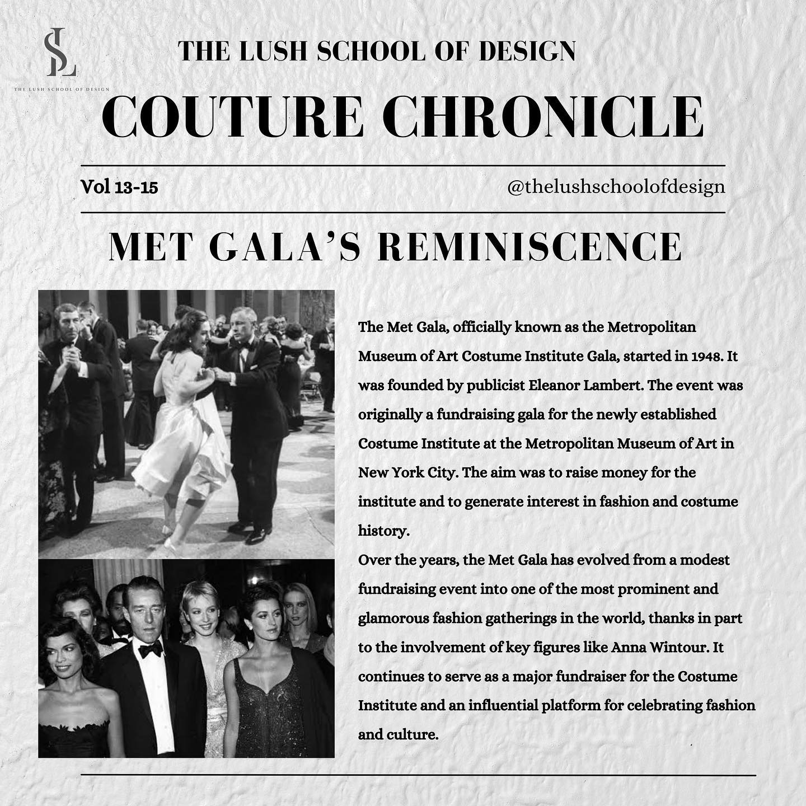

@thelushschoolofdesign
Step into the enchanting world of high fashion and timeless style with us. "Couture Chronicle" is your passport to the realms of elegance, craftsmanship, and the stories that define the fashion universe.
Unveil the secrets behind legendary couturiers, iconic runway moments, and the allure of bespoke masterpieces. We're your guide through the tapestry of fashion history. Join us as we rewind the fashion clock, celebrating the past, exploring the present, and forecasting the future of haute couture.
The red carpet tradition in Hollywood began in the 1920s. It was initially used for the premiere of the film "Robin Hood" at the Hollywood Egyptian Theatre in 1922.Over the years,it became a symbol of prestige and glamour,welcoming notable figures at film premiers and award ceremonies. The tradition quickly expanded beyond Hollywood and evolved to represent fashion,style,and societal values, making it a global phenomenon
Over the decades,red carpet fashion has been significant shifts in style,reflecting the changing times and societal norms.From the elegance of Old Hollywood in the 1950s to the more daring and diverse looks of recent years,it's a reflection.
The Met Gala, officially known as the Metropolitan Museum of Art Costume Institute Gala, started in 1948. It was founded by publicist Eleanor Lambert. The event was originally a fundraising gala for the newly established Costume Institute at the Metropolitan Museum of Art in New York City. The aim was to raise money for the institute and to generate interest in fashion and costume history.
Over the years, the Met Gala has evolved from a modest fundraising event into one of the most prominent and glamorous fashion gatherings in the world, thanks in part to the involvement of key figures like Anna Wintour. It continues to serve as a major fundraiser for the Costume Institute and an influential platform for celebrating fashion and culture.
Fashion illustration has a long history that dates back centuries. It began to gain prominence in the late 18th and 19th centuries when fashion magazines and journals started featuring detailed illustrations of the latest clothing and styles. These illustrations played a crucial role in conveying fashion trends and designs to the public before the widespread use of photography,fashion illustration continued to evolve as an art form and became a more expressive and creative medium,rather than simply a means of representing clothing. It remains an important aspect of the fashion industry today,with artists using various techniques and styles to capture the essence of fashion and style.